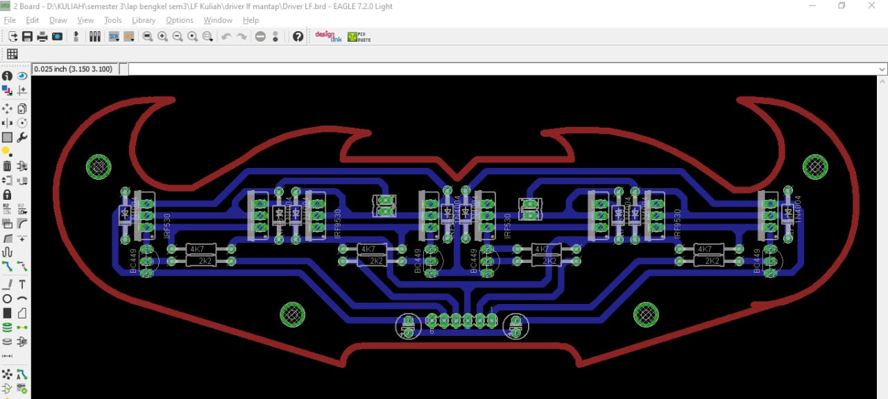
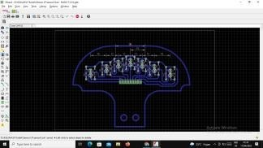
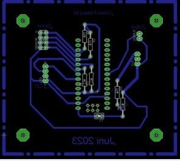
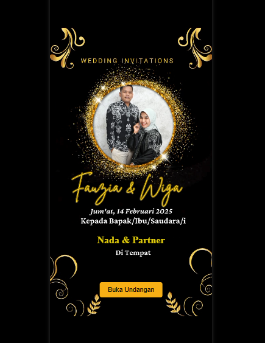
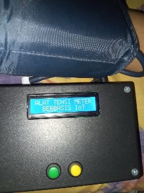
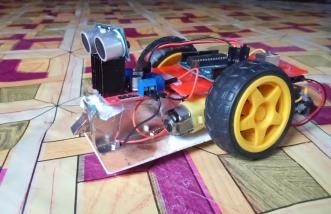

Layout driver motor menggunakan prinsip H-Bridge
yang memungkinkan motor bergerak maju/mundur.
Rangkaian ini menggunakan transistor mosfet irf530 sebagai
pengontrol arah putaran motor/ Menggantikan relay. Menggunakan
dioda untuk mencegah induksi balik dari motor yang dapat
merusak rangkaian driver motor H-bridge dan menggunakan komponen pendukung lainnya.

Layout sensor sederhana menggunakan photodioda untuk mengubah kondisi
cahaya lingkungan menjadi tegangan/sinyal listrik dan dibantu menggunakan resistor.

Layout untuk mengubah/mengkonversi sensor PT100(sensor suhu)
agar terbaca oleh mikrokontroler(menjadi tegangan 0V-5V)Layout shield arduino untuk robot sepakbola beroda yang terdiri dari
rangakaian pelindung tambahan menggunakan kapasitor dan komponen pendukung lainnya
Proteus
Rangkaian simulasi untuk menjalankan running led menggunakan
logika program dari arduino dengan komponen utama led, resistor dan
perangkat mikrikontroler berupa arduino uno
Programming
Python
HTML

Undangan digital, dibuat dengan menggunakan HTML, CSS, dan JavaScript. Undangan digital ini menggunakan GitHub Pages sebagai hosting sehingga dapat diakses dengan mudah oleh user.
Microsoft Office
Word
Excel
PowerPoint
My Best Project
Project
Alternatif perangkat pengganti modul converter (TEMAX-3/B)
menggunakan arduino dan modul ACS201 v1.0. Dimana peran utama perangkat ini untuk
mengubah sinyal menjadi 4-20mA untuk dikirim ke PLC.

Tensimeter Berbasis IoT; Menggunakan sensor MPX5050DP untuk mendeteksi tekanan darah.
Dengan data ditampilkan secara realtime melalui platform thinkspeak dan disimpan dalam google spreadsheet.Robot sepak bola beroda, dibangun bersama tim dengan berbagai integrasi perangkat dan software
agar robot tersebut dapat berjalan sesuai dengan aturan yang ada. Adapun komponen/perangkat/peralatan yang digunakan
berupa kamera(pengolahan citra), Selenoid (Aktuator/Penendang), Motor DC (motor penggerak/roda dan sebagai tangan
untuk penggiring bola), MiniPC intelnuc (Pengolahan citra), Arduino (Mikrokontroler), Sensor jarak, dan perangkat lainnya. Robot line follower; dibuat agar robot tersebut berjalan mengikuti garis yang sudah dibuat sebelumnya.
Robot ini menggunakan beberapa sensor sebagai pendeteksi garis yang ada.

Robot avoider, Robot ini mendeteksi jarak didepannya dan ketika benda terdeteksi dengan jarak tertentu robot ini
mengambil tindakan/ intruksi yang diinginkan seperti berbelok, mundur, berhenti ataupun tidakan lainnya.Prototipe Pengukuran detak jantung berbasis IoT menggunakan sensor MAX10302 dan NodeMCU sebagai microkontroler